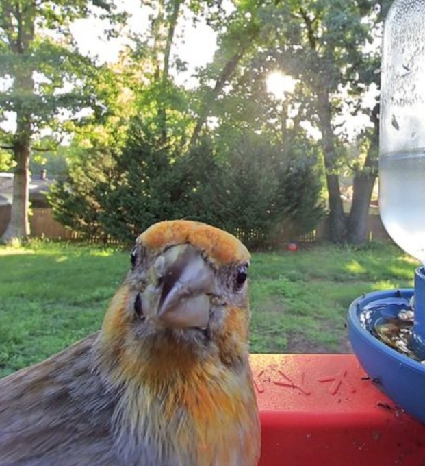
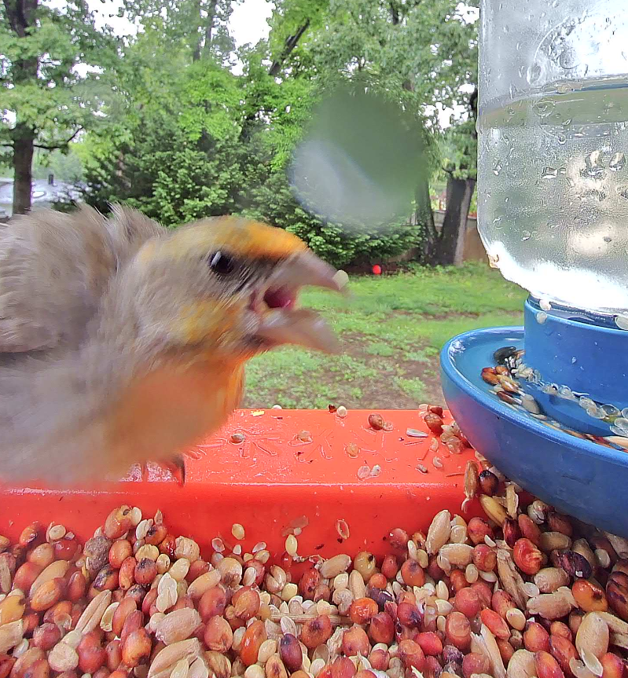

While a cousin of the quietly charming Mr. Red, Mr. Orange possesses a much different personality. He is the most boisterious bird in the community and commandeers the tray, even preventing nobility from visiting! This author can expect to see Mr. Orange a dozen times in a single day, treating himself to rounded seeds and squawking at any other bird who approaches. The lady bird who selects Mr. Orange is sure to have her needs met in every manner except socially, for she can expect his embarrassing behavior to isolate the pair.
